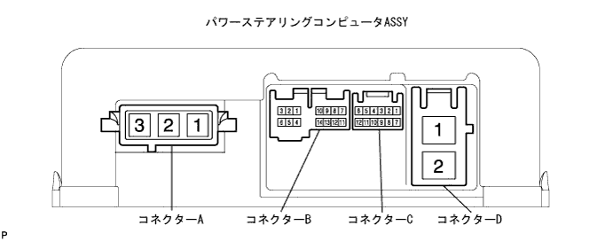

Electric Power Steering System Terminals of ECU |
Using SST (Toyota electrical tester), inspect the voltage, continuity or resistance between each pair of terminals or between each terminal and body ground.
Using SST (TaSCAN), check that pulses are generated between each pair of terminals or between each terminal and body ground.
Connect SST (TaSCAN) to DLC3, and check the communication status with the power steering computer assembly.

| Terminal No. (Symbol) | Terminal Description | Measurement Condition | Specified Condition |
|---|---|---|---|
| A1(V)[*1] | V-phase motor output | - | - |
| A2(U)[*1] | U-phase motor output | - | - |
| A3(W)[*1] | W-phase motor output | - | - |
| B1 (RZV) - Body ground | Rotation angle sensor excitation output signal | Engine running, steering wheel turned | 0.68 to 4.42V |
| B3 (RZG) - Body ground | Rotation angle sensor excitation circuit GND | Always | Below 1 Ω |
| B5 (RZCS) - Body ground | Rotation angle sensor COS phase input signal | Engine running, steering wheel turned | 0.68 to 4.42V |
| B6 (RZSN) - Body ground | Rotation angle sensor SIN phase input signal | Engine running, steering wheel turned | 0.68 to 4.42V |
| B11 (TRQ1) ←→ Body ground | Torque sensor signal 1 | Engine running, steering without load (neutral position) | 2.3 to 2.7V |
| Engine running, steering turned right | 2.5 to 3.8V | ||
| Engine running, steering turned left | 1.2 to 2.5V | ||
| B12 (TRQV) - Body ground | Torque sensor power supply | IG ON | 4.5 to 5.5V |
| B13 (TRQ2) ←→ Body ground | Torque sensor signal 2 | Engine running, steering without load (neutral position) | 2.3 to 2.7V |
| Engine running, steering turned right | 1.2 to 2.5V | ||
| Engine running, steering turned left | 2.5 to 3.8V | ||
| B14 (TRQG) - Body ground | Torque sensor GND | Always | Below 1 Ω |
| C1(CANH)←→C7(CANL) | CAN signal HI input/output | IG OFF | 54 to 67Ω |
| C6 (IG) - Body ground | IG power source input | IG ON | 9 to 16V |
| C7(CANL)←→C1(CANH) | CAN signal LO input/output | IG OFF | 54 to 67Ω |
| D1 (PIG) - Body ground | Motor power supply input | Always | 9 to 16V |
| D2 (PGND) ←→ Body ground | Power GND | Always | Below 1 Ω |